Layout Model Editor
The Layout Model Editor composes the model and style used to plot data on
a map from observations at discrete points (e.g., weather observations). This tool is used to edit existing models or to create new models.
The Layout Model Editor is opened with the Tools->Layout Model Template menu item in the Main Display window.
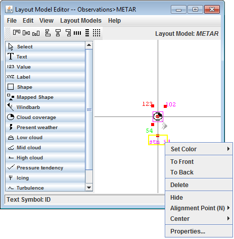
Image 1: Layout Model Editor
Layout models can be created from scratch by utilizing the File->New menu option, or an existing layout model can be edited with the Layout Models menu. The display includes a horizontal and vertical line, which acts as a reference point for the location of the layout model with respect to the physical location of the observation (at the origin). The different shapes and features that can be added to the layout model are in the left panel. The shapes and features can be added to the layout model by left-clicking the item and then left-clicking at the desired location in the panel. Once in the Layout Model, individual components can be moved by left-clicking and dragging them. When an item is placed into the layout model, the Properties dialog for the component will open. This Properties dialog can also be invoked by double-clicking on a shape.
Each component of the layout model can be resized by dragging the black squares along the outside of the item. Multiple items can be aligned at once by holding down Shift and left-clicking on the items to move. Clicking on an item makes it active, and active items have black squares around them. Each item in the layout model also includes a red "Alignment Point', which acts to locate the individual components of the model with respect to the center point of the observation. The location of the Alignment Point to the item can be changed via the Alignment Point option in the menu when an item is right-clicked on.
When the mouse is held over a component of the layout model, the name of the item will be listed in the bottom bar of the Layout Model Editor. This can be useful if multiple Value fields are included in the layout model (temperature, dew point, etc.).
To save a layout model, use the File->Save or File->Save As... menu items. When the layout model is saved, any point data displays or gridded value plot displays that are using it will be updated. To remove a model, use the File->Remove menu item. Layout models supplied with McIDAS-V cannot be removed, but user-created local models can be removed.
There are many options that can be controlled for each individual component of the layout model. This menu is seen by right-clicking on an item.
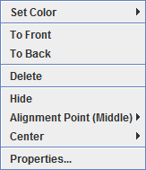
Image 2: Editing a Layout Model Menu
- Set Color - Sets the color of the selected item.
- To Front - Moves the selected item in front of others that may overlap it.
- To Back - Moves the selected item behind others that may overlap it.
- Delete - Removes the selected item from the layout model display. The Delete key will also remove the item.
- Hide - Grays out the component in the layout model, still leaving the object in the model, but not displaying it in the Main Display window.
- Alignment Point - Sets the location of the Alignment Point with respect to the item. For example, NW would place the Alignment Point to the northwest (upper left) of the item. This is not an option when working with windbarbs or vectors
- Center - Centers the display in both the horizontal and vertical, just in the horizontal, or just in the vertical.
- Properties... - Opens the Properties Dialog described below. The Properties Dialog can also be invoked by double-clicking on a component of the layout model.
The Properties window consists of four tabs: Display, Color By, Scale Size, and Rotate.
Properties Dialog - Display Tab
The Display tab allows for assigning which observation variable is associated with that item. Numerical values should appear in a "Value" item, text in a "Text" item, etc. Note that the items in this tab may differ depending on the item.
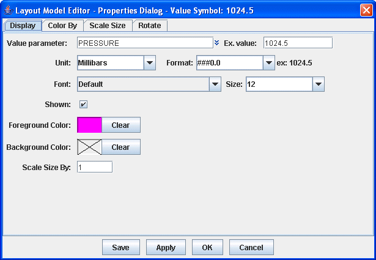
Image 3: Display Tab of the Properties Dialog
Properties
- Parameter - Represents what parameter the layout model item is displaying. This can be a single parameter, such as pressure, or it can be an equation. This is possible because the parameter identifiers in the layout model can hold embedded Jython code, and any parameter that begins with "=" is treated as a Jython expression. For example, "=T-Td" can be entered for dew point depression. This can also be formatted this as "='Td:'+str(T-Td)". To format the result of the calculation using the format specifier from the properties dialog, then enter "='Td:'+format(T-Td).
- Unit - Determines the unit that the parameter will use in its display.
- Format - Represents how the numerical value will be displayed. This can affect rounding. An example of how each format will appear is written in the 'ex:' next to the Format field. The 0 value will plot the actual numerical value of the data at that place in the number if it exists, and if not a 0 will be plotted at that place. The # value will plot the actual numerical value of the data at that place in the number if it exists, and if not it will leave it empty. For example, with a value of 998.5, different Formats would plot the value as:
- ###0.0# - plots as: 998.5
- 0000.00 - plots as: 0998.50
- Font - Sets the font of the item's text when displayed in the Main Display window.
- Size - Sets the size of the item's text when displayed in the Main Display window.
- Shown - Determines if the item will be shown as part of the layout model.
- Foreground Color - Represents the color of the text/symbol.
- Background Color - Sets a background color for the text/symbol if desired. A 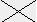 through this field is representative of a transparent background.
- Scale Size By - Scales the size of the item with respect to other items in the layout model. The default value for this field is 1, meaning that all parameters in the layout model are scaled the same.
Properties Dialog - Color By Tab
The Color By tab consists of two tabs within itself: Map Value Into Color Table, and Color From Parameter. This tab allows for specifying how to color the item in the layout model.
The Map Value Into Color Table tab allows for coloring the parameter based off of its numerical value in relation to the set data range and color table for the parameter.
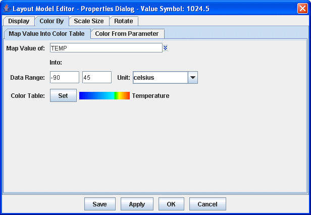
Image 4: Map Value Into Color Table Tab of the Color By Tab
Properties
- Map Value of - Sets the parameter used for coloring the displayed item. The
 to the right of this field allows for selecting a currently loaded field or an alias.
to the right of this field allows for selecting a currently loaded field or an alias.
- Data Range - Sets the numerical range of the parameter listed in the Map Value of field. This represents the end points for the color table.
- Unit - Sets the unit of the parameter listed in the Map Value of field.
- Color Table - Sets the color table of the parameter to be one of the already existing tables.
For example, in the above image the Temperature parameter has been specified with data range -90 to 45 Celsius. For each display, McIDAS-V will find the Temperature value (e.g., 15 Celsius), convert it to the specified unit (if necessary), find where it lays within the range, and use the corresponding color from the color table to display the data in the Main Display window.
The Color From Parameter tab allows for specifying a parameter, a set of (regular expression) patterns, and a corresponding color. If the text value of the parameter matches one of the patterns then the given color is used to color the shape.
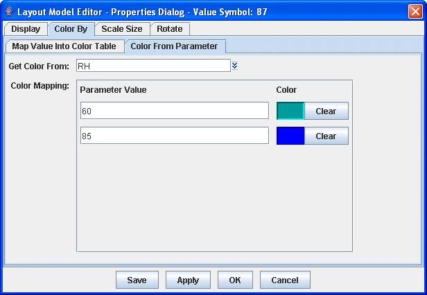
Image 5: Color From Parameter Tab of the Color By Tab
Properties
- Get Color From - Selects a parameter or set of patterns that correspond to a color. The to the right of this field allows for selecting a currently loaded field or an alias.
- Parameter Value - Represents a numerical, fixed value that will be colored by the color selected for each value. If specifying a range of values, they should be entered by minimum value, maximum value (for example: 250,273). Clicking 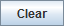 will change any set color back to transparent. Pressing the
 button will add two more Parameter Value fields once all other fields are filled.
button will add two more Parameter Value fields once all other fields are filled.
Properties Dialog - Scale Size Tab
The Scale Size tab allows for specifying a parameter to scale the shape by. For each point display, McIDAS-V will find the value of the parameter, determine where that value lies within the data range, and find the corresponding scaling from the scale factor range.
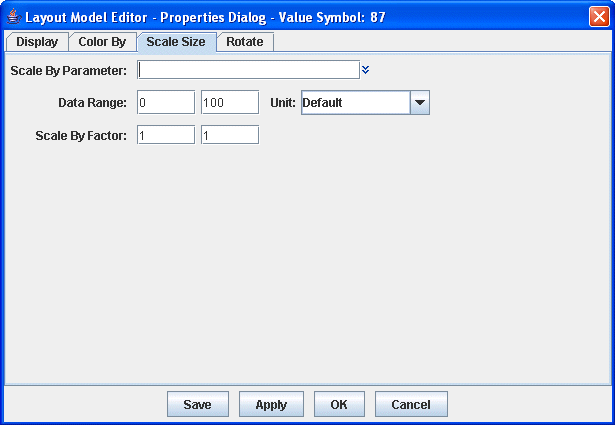
Image 6: Scale Size Tab of the Properties Dialog
Properties
- Scale By Parameter - Sets the parameter used to scale the data in the Main Display window. The to the right of this field allows for selecting a currently loaded field or an alias.
- Data Range - Sets the numerical range of the parameter listed in the Map Value of field of the Color By tab.
- Unit - Sets the unit of the parameter listed in the Scale By Parameter field.
- Scale By Factor - Sets the range for which the scaling factor will be applied to the data.
Properties Dialog - Rotate Tab
The Rotate About Axis tab works like the scale and color by facilities. Note that the rotation is about the Z axis in X/Y/Z space. It is not a rotation in Lat/Lon space. All three tabs in the Rotate tab have the same fields.
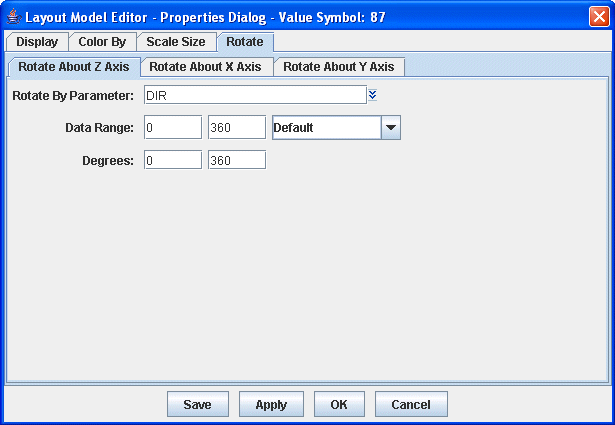
Image 7: Rotate About Tabs of the Rotate Tab
Properties
- Rotate By Parameter - Sets the parameter used to rotate the data in the Main Display window. The to the right of this field allows for selecting a currently loaded field or an alias.
- Data Range - Sets the numerical range of the parameter listed in the Map Value of field of the Color By tab.
- Unit - Sets the unit of the parameter listed in the Scale By Parameter field.
- Degrees - Sets the range of degrees for which the data will rote about each respective axis.
At the top of the Layout Model Editor window, there is an alignment toolbar that allows for specifying the location of one item in a layout model model with respect to another. To align one item with respect to another, both items must be selected in the Layout Model Editor must be active. To activate multiple items, use Shift+left click on each item.
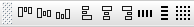
Image 8: Alignment Toolbar
- 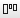 - Shifts the selected items up vertically to align the top of the items. There is no horizontal shift.
- 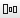 - Shifts the selected items vertically to align the middle point of the items. There is no horizontal shift.
- 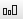 - Shifts the selected items down vertically to align the bottom of the items. There is no horizontal shift.
- 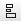 - Shifts the selected items left horizontally to align the left side of the two items. There is no vertical shift.
- 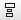 - Shifts the selected items horizontally to align the middle point of the items. There is no vertical shift.
- - Shifts the selected items right horizontally to align the right side of the two items. There is no vertical shift.
- 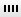 - Centers (horizontally) the item with respect to the shift made from a button on the left.
- - Centers (vertically) the item with respect to the shift made from a button on the left.
- - Snaps the items to the grid.
Properties Dialog - Shapes
Two items that can be added to the layout model whose Properties windows are significantly different than described above are Shape and Mapped Shape. These allow you to define numerical values of a parameter as a variety of different shapes.
The Properties window of the Mapped Shape Symbol is shown below. The only tab that differs between the Properties of Mapped Shape Symbol and Shape and the Properties above is the Display tab. The Shape item does not include the Shape Mappings panel in the window below, so using Shape, all numerical values will be plotted with the same shape regardless of their value.
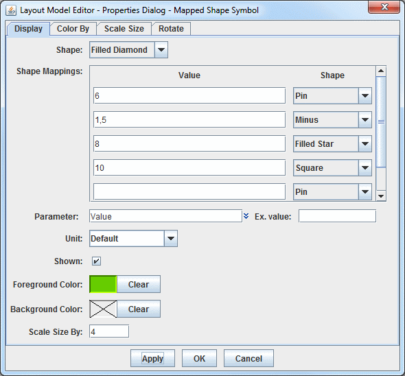
Image 9: Mapped Shape Properties
Properties
- Shape - Sets the shape that numerical values will be plotted as. This will be the shape of all of the values not included in the Shape Mappings panel below.
- Shape Mappings - Allows for defining specific shapes to individual numerical values included with the data. The Value field is for the numerical values included in the data. This can be either an individual value (e.g. 6) or a range of values, which is represented by minValue, maxValue (e.g. 1,5). The Shape field next to Value is the shape that the values will take in the display. Note that the Values and Shapes in the Shape Mappings panel override the Shape field above.
- Parameter - Represents what parameter the layout model item is displaying. This can be a single parameter, such as pressure, or it can be an equation. This is possible because the parameter identifiers in the layout model can hold embedded Jython code, and any parameter that begins with "=" is treated as a Jython expression. For example, "=T-Td" can be entered for dew point depression. This can also be formatted this as "='Td:'+str(T-Td)". To format the result of the calculation using the format specifier from the properties dialog, then enter "='Td:'+format(T-Td).
- Unit - Determines the unit that the parameter will use in its display.
- Shown - Determines if the item will be shown as part of the layout model.
- Foreground Color - Sets the color of the shape(s).
- Background Color - Sets a background color for the shape(s) if desired. A through this field is representative of a transparent background.
- Scale Size By - Scales the size of the item with respect to other items in the layout model. The default value for this field is 1, meaning that all parameters in the layout model are scaled the same.
For example, in the above image the Value parameter has been specified. From the Shape Mappings panel, values of 1-5 will display as a Minus, 6 will display as a Pin, 8 will display as a Filled Star, and 10 will display as a Square. All other values will display as a Filled Diamond, as set in the Shape field.
Menus
Many of the menu items seen utilizing this display are standard options that can be found in the Menus section of the Layer Controls page. However, there are several options unique to this display.
The File menu has these unique options:
- New - Allows for the creation of a new layout model.
- Save - Saves the layout model so that it can be used in McIDAS-V.
- Save As... - Saves the layout model so that it can be used in McIDAS-V and allows for the changing of the name of the layout model.
- Rename... - Opens a Rename Layout Model window that prompts for the layout model's new name.
- Remove - Removes the currently open layout model.
- Import... - Allows for importing a layout model as an IDV station model file (*.ism).
- Export... - Allows for exporting a layout model as an IDV station model file (*.ism).
- Close... - Closes the Layout Model Editor.
The Edit menu has these unique options:
- Symbols - Lists the different symbols included in the layout model. Clicking on the symbol will bring up the Properties Dialog window for that symbol, allowing for modifications to be made to it.
- Set properties on selected - Opens a Properties Dialog window for the active symbols in the Layout Model Editor. Active symbols are those that have black squares around them. The only items in this Properties Dialog window are only properties that can apply to all symbols in the layout model, such as the Data Range, Unit, and Color Table. Changing a property in this window will apply the change to all active symbols.
- Cut - Removes the selected symbols from the layout model.
- Copy - Copies the selected symbols from the layout model.
- Paste - Pastes a symbols into the layout model.
- Select All - Activates each individual symbol in the layout model so that cut/copy/paste can be applied to all of the symbols at once. When active, each symbol will have black squares around them.
- To Front - Moves the selected item to the front of others that may overlap it.
- To Back - Moves the selected item to the back of others that may overlap it.
The View menu has these unique options:
- Show Alignment Points - Displays a red square representing where the symbol will be centered.
- Zoom in - Zooms in on the layout model.
- Zoom out - Zooms out on the layout model.
- Zoom rest - Reverts back to original zoom level.
- Grid - Adds horizontal/vertical grids to the layout model. Increase makes the grid size larger (fewer grids), and Decrease makes the grid size smaller (more grids).
- Black background - Makes the background in the Layout Model Editor black, with white grids and gray axes lines.
- White Background - Makes the background in the Layout Model Editor white, with gray grids and black axes lines. This is the default for the Layout Model Editor
The Layout Models menu has these unique options:
- This menu lists out all of the layout models included in McIDAS-V. Layout models that have been created by a user will include <local> after the name. When a layout model is selected, it will be brought into the Layout Model Editor where a user can modify the layout model.